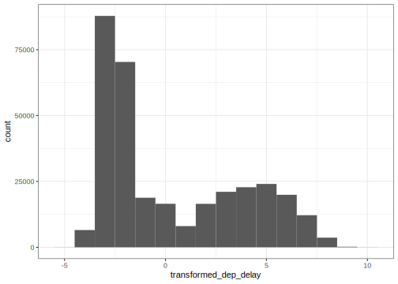

22 EDA: Data Transformations
Having a sense of how data is distributed, both from using visual or quantitative summaries, we can consider transformations of variables to ease both interpretation of data analyses and the application statistical and machine learning models to a dataset.
22.1 Centering and scaling
A very common and important transformation is to scale data to a common unit-less scale. Informally, you can think of this as transforming variables from whatever units they are measured (e.g., diamond depth percentage) into “standard deviations away from the mean” units (actually called standard units, or \(z\)-score). Given data \(x = x_1, x_2, \ldots, x_n\), the transformation applied to obtain centered and scaled variable \(z\) is:
\[ z_i = \frac{(x_i - \overline{x})}{\mathrm{sd}(x)} \]
where \(\overline{x}\) is the mean of data \(x\), and \(\mathrm{sd}(x)\) is its standard deviation.
library(ggplot2)
data(diamonds)
diamonds %>%
mutate(scaled_depth = (depth - mean(depth)) / sd(depth)) %>%
ggplot(aes(x=scaled_depth)) +
geom_histogram(binwidth=.5)Question: what is the mean of \(z\)? What is it’s standard deviation? Another name for this transformation is to standardize a variable.
One useful result of applying this transformation to variables in a dataset is that all variables are in the same, and thus comparable units.
On occasion, you will have use to apply transformations that only center (but not scale) data:
\[ z_i = (x_i - \overline{x}) \]
Question: what is the mean of \(z\) in this case? What is it’s standard deviation?
Or, apply transformations that only scale (but not center) data:
\[ z_i = \frac{x_i}{\mathrm{sd}(x)} \]
Question: what is the mean of \(z\) in this case? What is it’s standard deviation?
22.2 Treating categorical variables as numeric
Many modeling algorithms work strictly on numeric measurements. For example, we will see methods to predict some variable given values for other variables such as linear regression or support vector machines, that are strictly defined for numeric measurements. In this case, we would need to transform categorical variables into something that we can treat as numeric. We will see more of this in later sections of the course but let’s see a couple of important guidelines for binary variables (categorical variables that only take two values, e.g., health_insurance).
One option is to encode one value of the variable as 1 and the other as 0. For instance:
library(ISLR)
library(tidyverse)
data(Wage)
Wage %>%
mutate(numeric_insurace = ifelse(health_ins == "1. Yes", 1, 0)) %>%
head()## year age maritl race
## 1 2006 18 1. Never Married 1. White
## 2 2004 24 1. Never Married 1. White
## 3 2003 45 2. Married 1. White
## 4 2003 43 2. Married 3. Asian
## 5 2005 50 4. Divorced 1. White
## 6 2008 54 2. Married 1. White
## education region
## 1 1. < HS Grad 2. Middle Atlantic
## 2 4. College Grad 2. Middle Atlantic
## 3 3. Some College 2. Middle Atlantic
## 4 4. College Grad 2. Middle Atlantic
## 5 2. HS Grad 2. Middle Atlantic
## 6 4. College Grad 2. Middle Atlantic
## jobclass health health_ins
## 1 1. Industrial 1. <=Good 2. No
## 2 2. Information 2. >=Very Good 2. No
## 3 1. Industrial 1. <=Good 1. Yes
## 4 2. Information 2. >=Very Good 1. Yes
## 5 2. Information 1. <=Good 1. Yes
## 6 2. Information 2. >=Very Good 1. Yes
## logwage wage numeric_insurace
## 1 4.318063 75.04315 0
## 2 4.255273 70.47602 0
## 3 4.875061 130.98218 1
## 4 5.041393 154.68529 1
## 5 4.318063 75.04315 1
## 6 4.845098 127.11574 1Another option is to encode one value as 1 and the other as -1:
## year age maritl race
## 1 2006 18 1. Never Married 1. White
## 2 2004 24 1. Never Married 1. White
## 3 2003 45 2. Married 1. White
## 4 2003 43 2. Married 3. Asian
## 5 2005 50 4. Divorced 1. White
## 6 2008 54 2. Married 1. White
## education region
## 1 1. < HS Grad 2. Middle Atlantic
## 2 4. College Grad 2. Middle Atlantic
## 3 3. Some College 2. Middle Atlantic
## 4 4. College Grad 2. Middle Atlantic
## 5 2. HS Grad 2. Middle Atlantic
## 6 4. College Grad 2. Middle Atlantic
## jobclass health health_ins
## 1 1. Industrial 1. <=Good 2. No
## 2 2. Information 2. >=Very Good 2. No
## 3 1. Industrial 1. <=Good 1. Yes
## 4 2. Information 2. >=Very Good 1. Yes
## 5 2. Information 1. <=Good 1. Yes
## 6 2. Information 2. >=Very Good 1. Yes
## logwage wage numeric_insurance
## 1 4.318063 75.04315 -1
## 2 4.255273 70.47602 -1
## 3 4.875061 130.98218 1
## 4 5.041393 154.68529 1
## 5 4.318063 75.04315 1
## 6 4.845098 127.11574 1The decision of which of these two transformations to use is based on the method to use or the goal of your analysis. For instance, when predicting someone’s wage based on their health insurance status, the 0/1 encoding let’s us make statements like: “on average, wage increases by $XX if a person has health insurance”. On the other hand, a prediction algorithm called a Support Vector Machine is strictly defined on data coded as 1/-1.
For categorical attributes with more than two values, we extend this idea and encode each value of the categorical variable as a 0/1 column. You will see this referred to as one-hot-encoding.
Wage %>%
mutate(race_white = ifelse(race == "1. White", 1, 0),
race_black = ifelse(race == "2. Black", 1, 0),
race_asian = ifelse(race == "3. Asian", 1, 0),
race_other = ifelse(race == "4. Other", 1, 0)) %>%
select(starts_with("race")) %>%
head()## race race_white race_black race_asian
## 1 1. White 1 0 0
## 2 1. White 1 0 0
## 3 1. White 1 0 0
## 4 3. Asian 0 0 1
## 5 1. White 1 0 0
## 6 1. White 1 0 0
## race_other
## 1 0
## 2 0
## 3 0
## 4 0
## 5 0
## 6 0The builtin function model.matrix does this general transformation. We will see it when we look at statistical and Machine Learning models.
22.2.1 Discretizing continuous values.
How about transforming data in the other direction, from continuous to discrete values. This can make it easier to compare differences related to continuous measurements: Do doctors prescribe a certain medication to older kids more often? Is there a difference in wage based on age?
It is also a useful way of capturing non-linear relationships in data: we will see this in our regression and prediction unit. Two standard methods used for discretization are to use equal-length bins, where variable range is divided into bins regardless of the data distribution:
flights %>%
mutate(dep_delay_discrete = cut(dep_delay, breaks=100)) %>%
ggplot(aes(x=dep_delay_discrete)) +
geom_bar()The second approach uses equal-sized bins, where the range is divided into bins based on data distribution
flights %>%
mutate(dep_delay_discrete = cut(dep_delay,
breaks=quantile(dep_delay, probs=seq(0,1,len=11), na.rm=TRUE))) %>%
ggplot(aes(x=dep_delay_discrete)) +
geom_bar()In both cases, the cut function is used to apply discretization, with the breaks argument determining which method is applied. In the first example, breaks=100 specifies that 100 bins of equal-length are to be used. In the second example, the quantile function is used to define 10 equal-sized bins.
22.3 Skewed Data
In many data analysis, variables will have a skewed distribution over their range. In the last section we saw one way of defining skew using quartiles and median. Variables with skewed distributions can be hard to incorporate into some modeling procedures, especially in the presence of other variables that are not skewed. In this case, applying a transformation to reduce skew will improve performance of models.
Also, skewed data may arise when measuring multiplicative processes. This is very common in physical or biochemical processes. In this case, interpretation of data may be more intiuitive after a transformation.
We have seen an example of skewed data previously when we looked at departure delays in our flights dataset.
## Warning: Removed 8255 rows containing non-finite values
## (stat_bin).Previously, we looked at a way of determining skew for a dataset. Let’s see what that looks like for the dep_delay variable: (see dplyr vignette for info on ‘enquo’ and ‘!!’)
compute_skew_stat <- function(df, attribute) {
attribute <- enquo(attribute)
df %>%
summarize(med_attr=median(!!attribute, na.rm=TRUE),
q1_attr=quantile(!!attribute, 1/4, na.rm=TRUE),
q3_attr=quantile(!!attribute, 3/4, na.rm=TRUE)) %>%
mutate(d1 = med_attr - q1_attr, d2 = q3_attr - med_attr, skew_stat = d1 - d2) %>%
select(d1, d2, skew_stat)
}
flights %>% compute_skew_stat(dep_delay)## # A tibble: 1 x 3
## d1 d2 skew_stat
## <dbl> <dbl> <dbl>
## 1 3 13 -10In many cases a logarithmic transform is an appropriate transformation to reduce data skew:
- If values are all positive: apply
log2transform - If some values are negative, two options
- Started Log: shift all values so they are positive, apply
log2 - Signed Log: \(sign(x) \times log2(abs(x) + 1)\).
- Started Log: shift all values so they are positive, apply
Here is a signed log transformation of departure delay data:
transformed_flights <- flights %>%
mutate(transformed_dep_delay = sign(dep_delay) * log2(abs(dep_delay) + 1))
transformed_flights %>%
ggplot(aes(x=transformed_dep_delay)) +
geom_histogram(binwidth=1)## Warning: Removed 8255 rows containing non-finite values
## (stat_bin).
Let’s see if that reduced the skew of the dataset:
## # A tibble: 1 x 3
## d1 d2 skew_stat
## <dbl> <dbl> <dbl>
## 1 1 5.17 -4.17